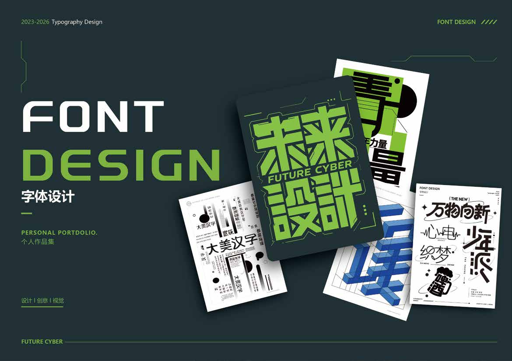

本站是 39 页横版 PDF 作品集的响应式网页重构版。所有作品图片均从 PDF 内嵌图像直接提取，保留原始比例与像素，没有裁切、重绘或 AI 生成内容。
SOURCE · 曾文卓作品集2.pdf作品集原稿共 39 页，含 5 个章节页、封面与封底。网页按项目重新组织内容：项目封面、详情页、高清图展示、分类导航与章节间的视觉过渡，而不是把 39 页逐页嵌进页面。
章节页（BRAND VI / UI UX / IP / LOGO / FONT）被用作全幅过渡带；2×2 排版页中的单张作品图也单独抽出，让它们在窄屏上可以自然重排。
新增项目：在 data/works.js 的 projects 数组追加一项，并在 projects/ 下复制一份页面外壳（修改 data-project 即可）。

08 — 09 / 09 · FONT DESIGN · 原创字体 · 中文实验字体海报
整站以暖白 #F6F3EC、深黑 #141412 与中性灰为基础，采用编辑式的大字号、细分隔线与留白。各项目保留自己的品牌色：海屿低空的品牌绿、滨小讯的政务蓝、PETORA 的深空蓝、字体章节的荧光绿，用于封面标签、过渡带与下一项目导览。